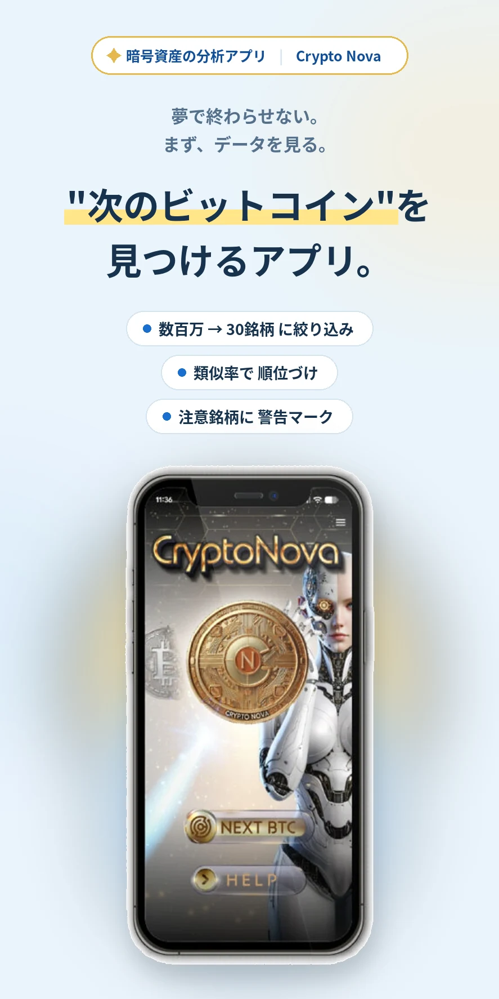

✦暗号資産の分析アプリ|Crypto Nova
相場を、
自分の目で読める
ようになる。
ビットコインなどの成長曲線をAIが学習。
数百万のアルトコインから、似た曲線を描く銘柄を
類似率が高い順に30銘柄、自動で表示します。
- 数百万 → 30銘柄に絞り込み
- 類似率で順位づけ
- 注意銘柄に警告マーク
ビットコインの成長曲線に似た銘柄を探す
似た曲線の銘柄（類似率順）
どれを調べればいい？
- 3つの端末に対応 Windows / iPhone / Android
- 分析データの随時更新 市場データの分析・情報提供
- 売買機能なし 資産をお預かりすることもありません
※本アプリは市場データの分析・情報提供を行うものであり、利益を保証するものではありません。
※暗号資産の取引には価格変動等のリスクがあります。
決めるのは自分。
問題定義
「調べる」と「決める」のあいだには、
壁があります。
価格のニュース、SNSの意見、専門家の解説。
情報は毎日増えていくのに、なぜか判断には近づかない。
理由はシンプルです。
数百万種類ともいわれるアルトコインの海から、
「そもそもどれを調べるか」を絞り込む手段を、
ほとんどの人が持っていないからです。
情報の量ではなく、整理の道具。
Crypto Novaは、そこから作られました。
Crypto Novaの仕組み
やっていることは、ひとつです。
AIが学習した成長曲線（時系列のチャートデータ）
- ₿BTCビットコイン
- ΞETHイーサリアム
- BBNBバイナンスコイン
- XXRPリップル
- SSHIB柴犬コイン
- DDOGEドージコイン
似た成長曲線を描いているアルトコインを、類似率が高い順に30個表示
※画面はイメージです。実際の表示・数値・銘柄とは異なります。
実際のアプリでは、こう見えます
NEXT BTCボタンを押してから、注意が必要な銘柄の確認まで。
使うときの流れに沿って、3つの画面をご紹介します。
※画面はイメージです。
大切なのは、これが「予言」ではないことです。
過去に大きく成長した銘柄と「曲線のかたちが似ている」という事実を示すだけで、同じように成長することを保証するものではありません。
似ているものを探す作業を、人の手で数百万種類からやるのは不可能です。
その絞り込みだけを、機械に任せる。
そこから先の「調べる・考える・決める」は、あなたの仕事です。
実際の画面
画面を、そのままお見せします。
できること／できないこと
先に、できないことからお伝えします。
CANNOTCrypto Novaにできないこと
- ×将来の価格を保証すること
- ×利益をお約束すること
- ×あなたの代わりに売買すること
- ×個別の投資助言を行うこと
CANCrypto Novaにできること
- ✓数百万種類のアルトコインからの絞り込み（成長曲線の類似率順に30銘柄を表示）
- ✓注意が必要な銘柄への警告マーク表示と、その理由の解説
- ✓専門用語を使わない、見て分かる画面設計
- ✓分析データの随時更新
できないことを先に書くのは、
正しく知ったうえで、選んでいただきたいからです。
使い方（3ステップ）と動作環境
むずかしい設定は、ありません。
-
STEP 01
インストール
ライセンス購入後にお届けするマニュアルに沿って、お使いの端末にインストール。
-
STEP 02
画面を見る
NEXT BTCボタンをタップ。分析結果が整理されて表示されます。
-
STEP 03
自分で判断する
表示は参考情報です。調べる・考える・決めるのは、あなたです。
対応端末
- Windows10 / 11・64bit
- iPhoneiOS 12.0以上
- Android8.0以上
※ライセンスは端末ごとの提供です（PC版・iPhone版・Android版）。詳細は次のページでご確認ください。
※ご利用にはインターネット接続が必要です。
運営の姿勢
誠実に、データと向き合う。
私たちが約束できるのは、未来の価格ではありません。
- 一約束できるのは、データの更新を続けること。
- 二注意が必要な銘柄には、注意と書くこと。
- 三できないことを、できると言わないこと。
開発の背景
Crypto Novaは、情報が多すぎて「何から調べればいいか分からない」という声から生まれました。数百万種類ともいわれるアルトコインの中で、すべてを人の手で追い続けることは現実的ではありません。だからこそ、過去の成長曲線との類似性をもとに、調べる候補を機械的に整理する道具をつくりました。私たちが目指すのは予測ではなく、判断の前に見るべき材料を、静かに届け続けることです。
運営：株式会社S・T・I
お問い合わせ：0120-507-986（受付 10:00〜16:00 月〜土）
よくあるご質問（製品について）
お答えします。ありのままに。
Qこのアプリを使えば、儲かりますか？
いいえ、利益をお約束するものではありません。表示されるのは「過去の成長曲線と似ている」という分析結果であり、投資の成果はご自身の判断と市場の状況によって決まります。
Q表示された30銘柄は「買うべき銘柄」ですか？
いいえ。「調べる候補」です。類似率が高いことは、値上がりの保証ではありません。警告マークの有無も含め、ご自身で調べたうえでご判断ください。
Q予測は当たりますか？
本アプリは将来を予測するものではなく、過去のデータとの類似を示すものです。似た曲線を描いた銘柄が、同じ結果になるとは限りません。
Q売買は自動で行われますか？
いいえ。売買機能はなく、資産をお預かりすることもありません。
Q初心者でも使えますか？
画面は専門用語を使わない設計です。ただし暗号資産の基礎知識と、取引に伴うリスクの理解は必要です。
Q料金や支払い方法は？
次のページ（料金・お申し込み）にすべて記載しています。一括・分割の総額、端末ごとのライセンス、動作要件までご確認のうえお申し込みください。
価格・お支払い方法・端末別ライセンスの詳細は、
次のページでご確認いただけます。
料金・お申し込みの詳細を見る
※次のページには、一括・分割それぞれの総額、お支払い方法、動作要件をすべて記載しています。